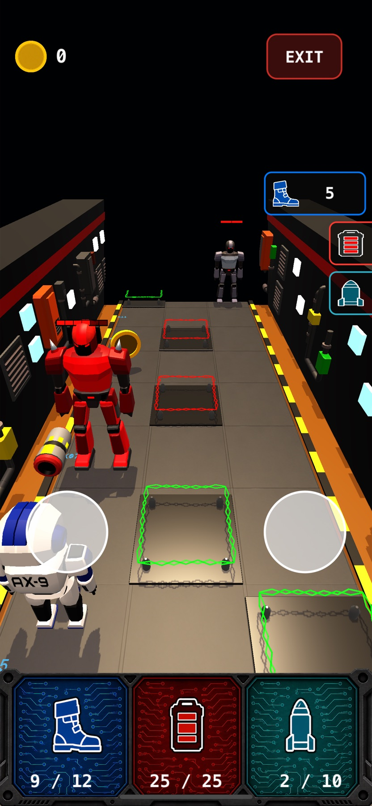
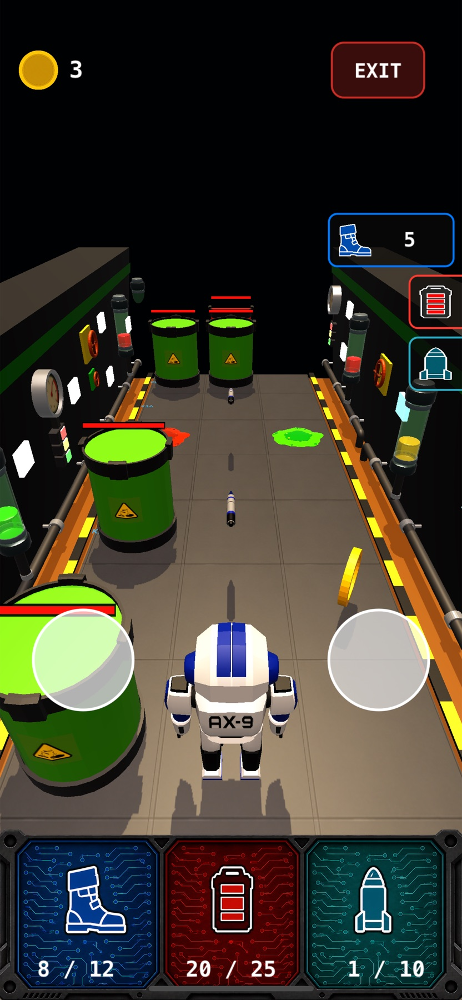
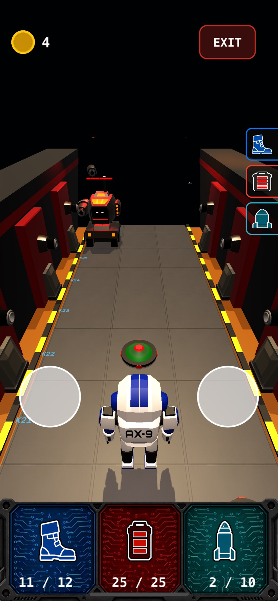
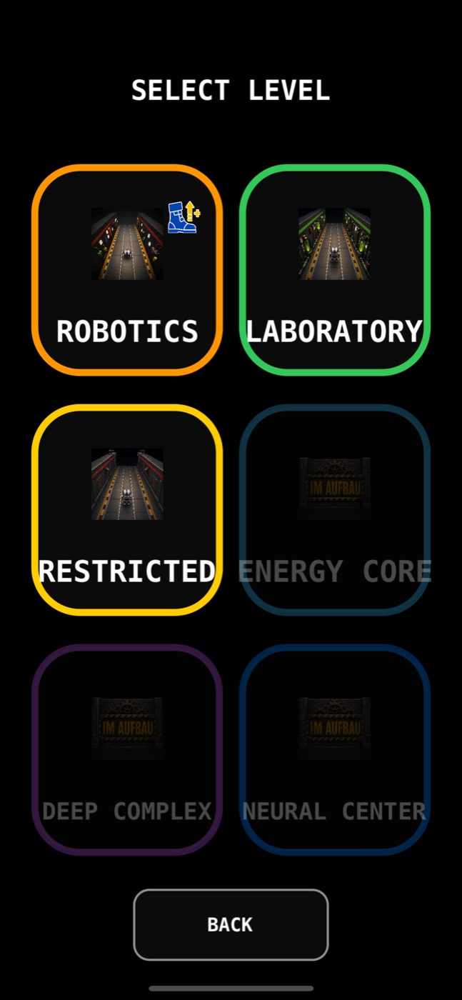

Taktisches Entscheidungsspiel
AX-9
Broken Relay
Denke voraus, verwalte deine Ressourcen und entscheide, welches Risiko du eingehst. Jeder Zug kann über deinen gesamten Run entscheiden.
Kostenlos · Offline · Keine Werbung · Keine Datenerfassung
Kein klassisches Actionspiel
Entscheidungen statt Reflexe
Beobachte herannahende Gefahren und entscheide im richtigen Moment, ob du ausweichst, angreifst oder bewusst Schaden hinnimmst. Jede Bewegung verbraucht wertvolle Ressourcen.
Stelle dich unterschiedlichen Gegnern und taktischen Situationen in herausfordernden Levels. Sammle Meta-Coins, um deine Startressourcen zu verbessern, und meistere Levels auf „Schwer“, um deine maximalen Ressourcen dauerhaft zu erhöhen.
Drei Biome. Ein unterbrochenes Relay.
Wähle deinen Weg
Roboterproduktion, instabile Labore und gesperrte Sektoren verlangen jedes Mal einen anderen Plan.




Dein Run, dein Schwierigkeitsgrad
Lerne. Passe dich an. Meistere.
Wähle zwischen mehreren Schwierigkeitsgraden und verbessere deine Strategie. Der Modus „Schwer“ belohnt durchdachte Entscheidungen — nicht schnelleres Tippen.
Das Relay ist offline
Wie weit tragen dich deine Ressourcen?
Spiele AX-9: Broken Relay kostenlos auf iPhone und iPad.